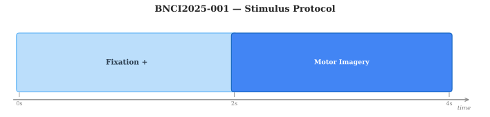

moabb.datasets.BNCI2025_001#
- class moabb.datasets.BNCI2025_001(subjects=None, sessions=None, *, return_all_modalities=False)[source]#
Bases:
BNCIBaseDataset[source]Dataset Snapshot
BNCI2025_001
EEG dataset investigating simultaneous encoding of speed, distance, and direction in discrete hand reaching movements using a four-direction center-out task
Motor Imagery, 16 classes
Motor Imagery Code: BNCI2025-001 20 subjects 1 session 67 ch 500 Hz 16 classes 4.0 s trials CC BY 4.0Class Labels: up_slow_near, up_slow_far, up_fast_near, up_fast_far, down_slow_near, down_slow_far, down_fast_near, down_fast_far, ...
Citation & Impact
- Paper DOI10.1088/1741-2552/ada0ea
- CitationsLoading…
- Public APICrossref | OpenAlex
- Page Views30d: 40 · all-time: 46#64 of 97 · Top 66% most viewedUpdated: 2026-03-16 UTC
Stimulus Protocol
4s task window per trial · 16-class motor imagery paradigm · 1 runs/session across 1 sessions
HED Event TagsHED tagsSource: MOABB BIDS HED annotation mapping.
up_slow_nearSensory-eventAgent-actionup_slow_farSensory-eventAgent-actionup_fast_nearSensory-eventAgent-actionup_fast_farSensory-eventAgent-actiondown_slow_nearSensory-eventAgent-actiondown_slow_farSensory-eventAgent-actiondown_fast_nearSensory-eventAgent-actiondown_fast_farSensory-eventAgent-actionleft_slow_nearSensory-eventAgent-actionleft_slow_farSensory-eventAgent-actionleft_fast_nearSensory-eventAgent-actionleft_fast_farSensory-eventAgent-actionright_slow_nearSensory-eventAgent-actionright_slow_farSensory-eventAgent-actionright_fast_nearSensory-eventAgent-actionright_fast_farSensory-eventAgent-actionHED tree view
Tree · up_slow_near
├─ Sensory-event │ ├─ Experimental-stimulus │ └─ Visual-presentation └─ Agent-action └─ Reach ├─ Upward ├─ Label └─ LabelTree · up_slow_far
├─ Sensory-event │ ├─ Experimental-stimulus │ └─ Visual-presentation └─ Agent-action └─ Reach ├─ Upward ├─ Label └─ LabelTree · up_fast_near
├─ Sensory-event │ ├─ Experimental-stimulus │ └─ Visual-presentation └─ Agent-action └─ Reach ├─ Upward ├─ Label └─ LabelTree · up_fast_far
├─ Sensory-event │ ├─ Experimental-stimulus │ └─ Visual-presentation └─ Agent-action └─ Reach ├─ Upward ├─ Label └─ LabelTree · down_slow_near
├─ Sensory-event │ ├─ Experimental-stimulus │ └─ Visual-presentation └─ Agent-action └─ Reach ├─ Downward ├─ Label └─ LabelTree · down_slow_far
├─ Sensory-event │ ├─ Experimental-stimulus │ └─ Visual-presentation └─ Agent-action └─ Reach ├─ Downward ├─ Label └─ LabelTree · down_fast_near
├─ Sensory-event │ ├─ Experimental-stimulus │ └─ Visual-presentation └─ Agent-action └─ Reach ├─ Downward ├─ Label └─ LabelTree · down_fast_far
├─ Sensory-event │ ├─ Experimental-stimulus │ └─ Visual-presentation └─ Agent-action └─ Reach ├─ Downward ├─ Label └─ LabelTree · left_slow_near
├─ Sensory-event │ ├─ Experimental-stimulus │ └─ Visual-presentation └─ Agent-action └─ Reach ├─ Left ├─ Label └─ LabelTree · left_slow_far
├─ Sensory-event │ ├─ Experimental-stimulus │ └─ Visual-presentation └─ Agent-action └─ Reach ├─ Left ├─ Label └─ LabelTree · left_fast_near
├─ Sensory-event │ ├─ Experimental-stimulus │ └─ Visual-presentation └─ Agent-action └─ Reach ├─ Left ├─ Label └─ LabelTree · left_fast_far
├─ Sensory-event │ ├─ Experimental-stimulus │ └─ Visual-presentation └─ Agent-action └─ Reach ├─ Left ├─ Label └─ LabelTree · right_slow_near
├─ Sensory-event │ ├─ Experimental-stimulus │ └─ Visual-presentation └─ Agent-action └─ Reach ├─ Right ├─ Label └─ LabelTree · right_slow_far
├─ Sensory-event │ ├─ Experimental-stimulus │ └─ Visual-presentation └─ Agent-action └─ Reach ├─ Right ├─ Label └─ LabelTree · right_fast_near
├─ Sensory-event │ ├─ Experimental-stimulus │ └─ Visual-presentation └─ Agent-action └─ Reach ├─ Right ├─ Label └─ LabelTree · right_fast_far
├─ Sensory-event │ ├─ Experimental-stimulus │ └─ Visual-presentation └─ Agent-action └─ Reach ├─ Right ├─ Label └─ LabelChannel SummaryTotal channels67EEG67 (EEG)EOG4Montageaf7 af3 afz af4 af8 f7 f5 f3 f1 fz f2 f4 f6 f8 ft7 fc5 fc3 fc1 fcz fc2 fc4 fc6 ft8 t7 c5 c3 c1 cz c2 c4 c6 t8 tp7 cp5 cp3 cp1 cpz cp2 cp4 cp6 tp8 p7 p5 p3 p1 pz p2 p4 p6 p8 ppo1h ppo2h po7 po3 poz po4 po8 o1 oz o2Sampling500 HzReferencecommon averageFilter50 Hz notchNotch / line50 HzThis diagram is automatically generated from MOABB metadata. Please consult the original publication to confirm the experimental protocol details.
BNCI 2025-001 Motor Kinematics Reaching dataset.
Dataset from Srisrisawang & Muller-Putz (2024) [1].
Dataset Description
This dataset investigates how the brain simultaneously encodes multiple kinematic parameters (speed, distance, and direction) during discrete reaching movements. Participants performed a four-direction center-out reaching task with varying speeds (quick/slow) and distances (near/far).
The dataset provides insight into movement planning and execution processes as measured through EEG, enabling research on brain-computer interfaces for motor control and neurorehabilitation applications.
Participants
20 healthy subjects (12 male, 8 female)
Age: 26.1 +/- 4.1 years
Handedness: 17 right-handed, 3 left-handed (all used right hand)
Location: Institute of Neural Engineering, Graz University of Technology, Austria
Recording Details
Equipment: BrainAmp (Brain Products GmbH)
Channels: 60 EEG + 4 EOG = 64 total channels
Sampling rate: 500 Hz
Reference: Common average reference (CAR) across 55 channels
EOG placement: Outer canthi, above/below left eye
Electrode positions: Measured with ultrasonic device (ELPOS, Zebris)
Experimental Procedure
4-direction center-out reaching task
2 speed levels: slow, quick
2 distance levels: near, far
16 conditions total (4 directions x 2 speeds x 2 distances)
~60 trials per condition (~960 total per subject)
- Trial structure:
1 s preparation period
Cue movement (0.4-2.4 s depending on condition)
>= 1 s waiting period
Movement execution
1 s feedback display
2 s intertrial interval
Event Codes
Events encode the combination of direction, speed, and distance: - up_slow_near (1), up_slow_far (2), up_fast_near (3), up_fast_far (4) - down_slow_near (5), down_slow_far (6), down_fast_near (7), down_fast_far (8) - left_slow_near (9), left_slow_far (10), left_fast_near (11), left_fast_far (12) - right_slow_near (13), right_slow_far (14), right_fast_near (15), right_fast_far (16)
References
[1]Srisrisawang, N., & Muller-Putz, G. R. (2024). Simultaneous encoding of speed, distance, and direction in discrete reaching: an EEG study. Journal of Neural Engineering, 21(6). https://doi.org/10.1088/1741-2552/ada0ea
from moabb.datasets import BNCI2025_001 dataset = BNCI2025_001() data = dataset.get_data(subjects=[1]) print(data[1])
Dataset summary
#Subj
20
#Chan
64
#Classes
16
#Trials / class
varies
Trials length
4 s
Freq
500 Hz
#Sessions
1
#Runs
1
Total_trials
varies
Participants
Population: Healthy
Age: 26.1 years
Handedness: {‘right’: 17, ‘left’: 3}
Equipment
Amplifier: BrainAmp
Electrodes: EEG
Montage: af7 af3 afz af4 af8 f7 f5 f3 f1 fz f2 f4 f6 f8 ft7 fc5 fc3 fc1 fcz fc2 fc4 fc6 ft8 t7 c5 c3 c1 cz c2 c4 c6 t8 tp7 cp5 cp3 cp1 cpz cp2 cp4 cp6 tp8 p7 p5 p3 p1 pz p2 p4 p6 p8 ppo1h ppo2h po7 po3 poz po4 po8 o1 oz o2
Reference: common average
Preprocessing
Data state: preprocessed with eye artifact correction
Bandpass filter: 0.3-80 Hz
Steps: low-pass filter at 100 Hz, notch filter at 50 Hz, downsampling to 200 Hz, bad channel rejection and interpolation, bandpass filter 0.3-80 Hz, eye artifact correction via SGEYESUB, ICA with FastICA algorithm, IC artifact removal, low-pass filter at 3 Hz, downsampling to 10 Hz, bad trial rejection, common average reference
Re-reference: common average
Notes: Frontal channels (AF7, AF3, AFz, AF4, AF8) and EOG removed prior to CAR to reduce residual eye artifacts. Final analysis used 55 channels. Eye blocks recorded separately for SGEYESUB model training. Bad trials rejected based on amplitude >200 µV or standard deviation >5SD. Movement-related bad trials rejected for incorrect direction, no movement, duration <0.2s or >4s, or movement initiated <0.5s after cue stop.
Data Access
DOI: 10.1088/1741-2552/ada0ea
Data URL: rkobler/eyeartifactcorrection
Repository: GitHub
Experimental Protocol
Paradigm: imagery
Task type: discrete reaching
Tasks: discrete reaching
Feedback: visual (cue color: green for correct, red for incorrect direction)
Stimulus: visual cue
Notes
Added in version 1.3.0.
This dataset is notable for its multi-parameter kinematic design, enabling study of how multiple movement parameters are represented simultaneously in EEG activity. The paradigm uses movement execution rather than motor imagery, making it complementary to MI datasets.
The data is compatible with the MOABB motor imagery paradigm for processing purposes, though the underlying task is movement execution.
- __init__(subjects=None, sessions=None, *, return_all_modalities=False)[source]#
Initialize function for the BaseDataset.
- property all_subjects#
Full list of subjects available in this dataset (unfiltered).
- convert_to_bids(path=None, subjects=None, overwrite=False, format='EDF', verbose=None)[source]#
Convert the dataset to BIDS format.
Saves the raw EEG data in a BIDS-compliant directory structure. Unlike the caching mechanism (see
CacheConfig), the files produced here do not contain a processing-pipeline hash (desc-<hash>) in their names, making the output a clean, shareable BIDS dataset.- Parameters:
path (str | Path | None) – Directory under which the BIDS dataset will be written. If
Nonethe default MNE data directory is used (same default as the rest of MOABB).subjects (list of int | None) – Subject numbers to convert. If
None, all subjects insubject_listare converted.overwrite (bool) – If
True, existing BIDS files for a subject are removed before saving. Default isFalse.format (str) – The file format for the raw EEG data. Supported values are
"EDF"(default),"BrainVision", and"EEGLAB".verbose (str | None) – Verbosity level forwarded to MNE/MNE-BIDS.
- Returns:
bids_root – Path to the root of the written BIDS dataset.
- Return type:
Examples
>>> from moabb.datasets import AlexMI >>> dataset = AlexMI() >>> bids_root = dataset.convert_to_bids(path='/tmp/bids', subjects=[1])
See also
CacheConfigCache configuration for
get_data().moabb.datasets.bids_interface.get_bids_rootReturn the BIDS root path.
Notes
Added in version 1.5.
- data_path(subject, path=None, force_update=False, update_path=None, verbose=None)[source]#
Return paths to data files for a single subject.
- download(subject_list=None, path=None, force_update=False, update_path=None, accept=False, verbose=None)[source]#
Download all data from the dataset.
This function is only useful to download all the dataset at once.
- Parameters:
subject_list (list of int | None) – List of subjects id to download, if None all subjects are downloaded.
path (None | str) – Location of where to look for the data storing location. If None, the environment variable or config parameter
MNE_DATASETS_(dataset)_PATHis used. If it doesn’t exist, the “~/mne_data” directory is used. If the dataset is not found under the given path, the data will be automatically downloaded to the specified folder.force_update (bool) – Force update of the dataset even if a local copy exists.
update_path (bool | None) – If True, set the MNE_DATASETS_(dataset)_PATH in mne-python config to the given path. If None, the user is prompted.
accept (bool) – Accept licence term to download the data, if any. Default: False
verbose (bool, str, int, or None) – If not None, override default verbose level (see
mne.verbose()).
- get_additional_metadata(subject: str, session: str, run: str) None | DataFrame[source]#
Load additional metadata for a specific subject, session, and run.
This method is intended to be overridden by subclasses to provide additional metadata specific to the dataset. The metadata is typically loaded from an events.tsv file or similar data source.
- get_block_repetition(paradigm, subjects, block_list, repetition_list)[source]#
Select data for all provided subjects, blocks and repetitions.
subject -> session -> run -> block -> repetition
See also
BaseDataset.get_data
- get_data(subjects=None, cache_config=None, process_pipeline=None)[source]#
Return the data corresponding to a list of subjects.
The returned data is a dictionary with the following structure:
data = {'subject_id' : {'session_id': {'run_id': run} } }
subjects are on top, then we have sessions, then runs. A sessions is a recording done in a single day, without removing the EEG cap. A session is constitued of at least one run. A run is a single contiguous recording. Some dataset break session in multiple runs.
Processing steps can optionally be applied to the data using the
*_pipelinearguments. These pipelines are applied in the following order:raw_pipeline->epochs_pipeline->array_pipeline. If a*_pipelineargument isNone, the step will be skipped. Therefore, thearray_pipelinemay either receive amne.io.Rawor amne.Epochsobject as input depending on whetherepochs_pipelineisNoneor not.- Parameters:
subjects (List of int) – List of subject number
cache_config (dict | CacheConfig) – Configuration for caching of datasets. See
CacheConfigfor details.process_pipeline (Pipeline | None) – Optional processing pipeline to apply to the data. To generate an adequate pipeline, we recommend using
moabb.utils.make_process_pipelines(). This pipeline will receivemne.io.BaseRawobjects. The steps names of this pipeline should be elements ofStepType. According to their name, the steps should either return amne.io.BaseRaw, amne.Epochs, or anumpy.ndarray(). This pipeline must be “fixed” because it will not be trained, i.e. no call tofitwill be made.
- Returns:
data – dict containing the raw data
- Return type:
Dict
- property metadata: DatasetMetadata | None[source]#
Return structured metadata for this dataset.
Returns the DatasetMetadata object from the centralized catalog, or None if metadata is not available for this dataset.
- Returns:
The metadata object containing acquisition parameters, participant demographics, experiment details, and documentation. Returns None if no metadata is registered for this dataset.
- Return type:
DatasetMetadata | None
Examples
>>> from moabb.datasets import BNCI2014_001 >>> dataset = BNCI2014_001() >>> dataset.metadata.participants.n_subjects 9 >>> dataset.metadata.acquisition.sampling_rate 250.0
{kind=link}